Loghi rifiniti, tre direzioni
A. Sigillo C
Evoluzione del marchio attuale: la C resta, il disco diventa scuro per contrasto, dente intero. Nome in Piazzolla come sul sito.
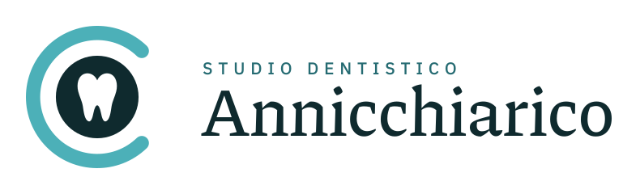
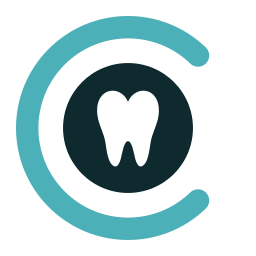
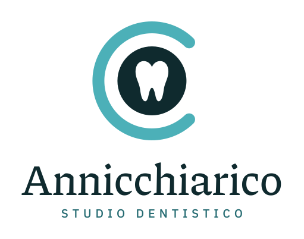
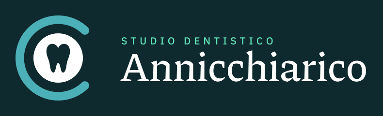
B. Monolinea
Dente a contorno, un punto menta come luce. Registro clinico ed essenziale: funziona su carta intestata e camice.
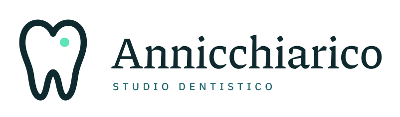
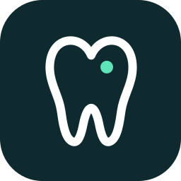
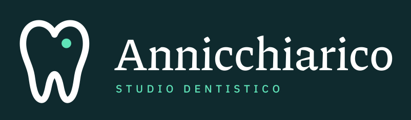
C. Sigillo rotondo
Timbro con testo ad arco e città: il più istituzionale. Bene per insegna, timbro, social.
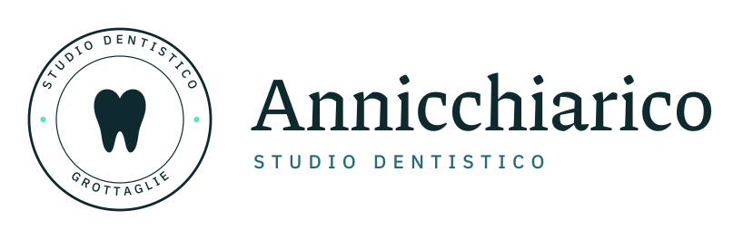
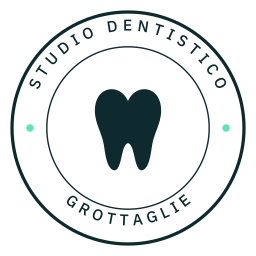
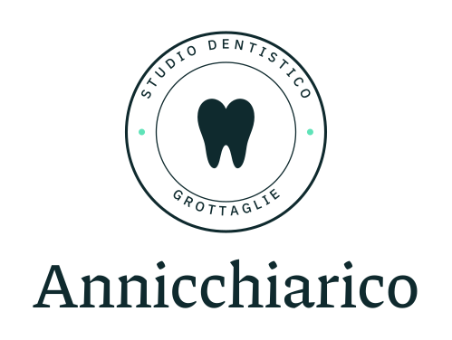
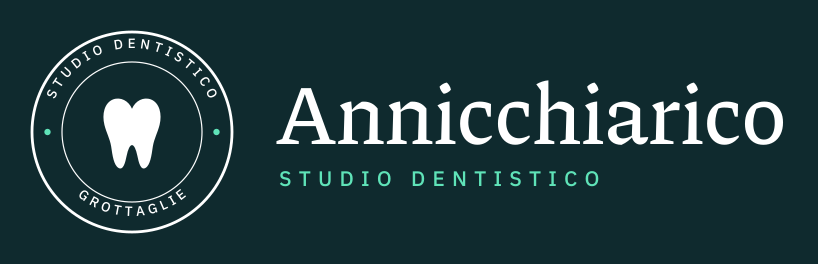